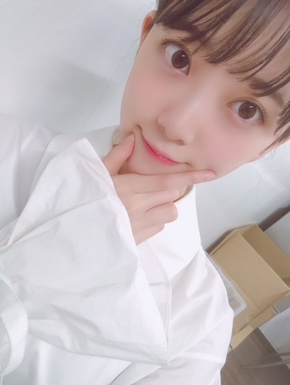

2018/1026Fri漫画みたいにいかない。第二弾
来年春に日テレで放送されるドラマ
「漫画みたいにいかない」第二弾の1話に
百川さくら役で
ゲスト出演させていただきます☺︎
皆さん本当に面白くて優しくて
コメディドラマ大好きなので
凄く幸せな現場です
頑張りますので、
是非見ていただけたら嬉しいです！
そして、新曲
「帰り道は遠回りしたくなる」
のカップリング曲
キャラバンは眠らないのMVが公開されました！

MVは見てくださいましたか？☺︎
個人個人の撮影だったのでみんなが
どんなことをしたか見れてなくて
完成を見てようやく知ったのですが
胸にグッとくる素敵なMVになっていました
わたしはファミレスの店員役
ミスばかりして怒られて落ち込みながらも
また、頑張ろうって立ち上がります
今まで乃木坂で活動をしてきて
いろんな経験をして
その時の感情などを今回のMVで
ぶつけることができたかな？と思いました
みんなの叫び、涙、笑顔、嬉しさ、悔しさ
苦しさ、擬かしさ、希望、、
いろんなものを感じ取って
見てくださったら嬉しいです
うまくいかなくても、今が辛くても
必ず光は差すし晴れるんだよって
いうメッセージ性が込められているので
わたしは個人的に凄く好き
ライブ披露も楽しみです☺︎

ジャケ写 個人PV
共にtype Cにいます！

よろしくです。
桐谷美玲さんのカレンダーを
買いました☺︎

全写真好きだから
全部、飾りたいなって思ってたら
案の定両面印刷で、
どちらかを犠牲になんかできなくて
なくなくカレンダーとして
組み立てて置いてます。笑

では！
2018/10/26 12:06
コメント(403)
未央奈ー❗️
ブログありがとう❗️
ドラマおめでとう✨✨
映画もあるし
来年ホントに楽しみ❗️❗️
『キャラバンは眠らない』
のMV見たよ
みんないろいろな感情があって
それを乗り越えて最後には笑顔になる
めちゃめちゃよかったよ❗️
ゆうたんより
ブログありがとう❗️
ドラマおめでとう✨✨
映画もあるし
来年ホントに楽しみ❗️❗️
『キャラバンは眠らない』
のMV見たよ
みんないろいろな感情があって
それを乗り越えて最後には笑顔になる
めちゃめちゃよかったよ❗️
ゆうたんより
ブログ更新ありがとうございました！キャラバンは眠らないのMV素敵でした！
堀ちゃんブログありがとー。
新曲発売楽しみにしてます！
新曲発売楽しみにしてます！
未央奈ー！
今日も握手会だったのですよね、お疲れ様です！！乃木坂は一定のタイミングで握手会免除があるんだよね？多分。
そのうち未央奈も握手会来なくなる時が来るのだろうけどそれまではよろしくね！^ ^
ドラマ出演ですか〜！流石未央奈♬ コメディドラマなのですね、すっかり忘れていたジャンルだけどコメディドラマもいいね。未央奈は独特な雰囲気持ってるから仲間由紀恵さんみたいな演技も出来そうだなってふと思ったよ ^ ^
新曲のMV見たよ！
そう言えばそうだね個別撮影。みんなも完成見たのはできてからなんだねー。そういうのドキドキするだろうね面白そうだね！
MVの未央奈の哀しそうな表情見てさ、実はもやっとした気分になったのさ笑 本当になんか哀しそうな感じが伝わってしまってMV中に未央奈が心配になってしまいました笑
いやー、表現力が高まってきましたね(*´-`)私が未央奈に入れ込んでるからって側面はあるけど、それでも前までならそんな感情の変化することなかったから、きっと未央奈自身の表現力が成長したのだと思うよ！！
そうなんだね。(*´꒳`*)未央奈自身が過去辛い時期を乗り越えてきたからこそ説得力があります。今が辛くても必ず光が差す。私も心に留めておきますね♬
また、未央奈自身も改めて今が辛くても必ず光が差すという事、覚えていてね！もしもまた将来。曇ってなかなか光が刺さない時が来たのなら、私が靄を破り光を届けるからね！！なんて。(*´-`)
引っ越し準備しててコメント遅くなってごめんね！ではおやすみなさい^ ^ 良い夢を。
今日も握手会だったのですよね、お疲れ様です！！乃木坂は一定のタイミングで握手会免除があるんだよね？多分。
そのうち未央奈も握手会来なくなる時が来るのだろうけどそれまではよろしくね！^ ^
ドラマ出演ですか〜！流石未央奈♬ コメディドラマなのですね、すっかり忘れていたジャンルだけどコメディドラマもいいね。未央奈は独特な雰囲気持ってるから仲間由紀恵さんみたいな演技も出来そうだなってふと思ったよ ^ ^
新曲のMV見たよ！
そう言えばそうだね個別撮影。みんなも完成見たのはできてからなんだねー。そういうのドキドキするだろうね面白そうだね！
MVの未央奈の哀しそうな表情見てさ、実はもやっとした気分になったのさ笑 本当になんか哀しそうな感じが伝わってしまってMV中に未央奈が心配になってしまいました笑
いやー、表現力が高まってきましたね(*´-`)私が未央奈に入れ込んでるからって側面はあるけど、それでも前までならそんな感情の変化することなかったから、きっと未央奈自身の表現力が成長したのだと思うよ！！
そうなんだね。(*´꒳`*)未央奈自身が過去辛い時期を乗り越えてきたからこそ説得力があります。今が辛くても必ず光が差す。私も心に留めておきますね♬
また、未央奈自身も改めて今が辛くても必ず光が差すという事、覚えていてね！もしもまた将来。曇ってなかなか光が刺さない時が来たのなら、私が靄を破り光を届けるからね！！なんて。(*´-`)
引っ越し準備しててコメント遅くなってごめんね！ではおやすみなさい^ ^ 良い夢を。
ツインテール堀殿メチャカワでうれぴーぽー(o￣◎￣)oバブゥ
みおちゃんこんばんは
今日も個別握手会お疲れ様でした！今日は21th最後の個握だったんだよ。22ndも全力で応援するからよろしくね
今日も沢山可愛いコスプレ見れて最高でした！ハロウィン万歳
僕的MVPは音ちゃん！まだまだ制服いけるね。やっぱボブ未央奈だなーって思ったよ〜
明日もお仕事かな？今日はゆっくり休んでがんばってね。
おやすみおな
今日も個別握手会お疲れ様でした！今日は21th最後の個握だったんだよ。22ndも全力で応援するからよろしくね
今日も沢山可愛いコスプレ見れて最高でした！ハロウィン万歳
僕的MVPは音ちゃん！まだまだ制服いけるね。やっぱボブ未央奈だなーって思ったよ〜
明日もお仕事かな？今日はゆっくり休んでがんばってね。
おやすみおな
未央奈、
今日は握手会2部で、
ツインテールに
ライトグリーンワンピースの
愛梨ちゃんぽい
かわいさいっぱいの未央奈に
会えてうれしかったよ。
未央奈に、
・ドラマ出演おめでとう
・目標をどんどん叶えてるね
って、伝えられてよかったよ。
映画に続いて、ドラマ出演ってすごいよね。
コメディは のりさんに
毎週 鍛えられてるから大丈夫かな。
この調子で演技を極めていって、
次はドラマ主演も目指していってね。
「乃木中」では、未央奈が
バナナマンさんのツッコミに負けずに
頑張ってるのがいいよね。
では、次の握手会は12月15日だね。
2部で また、
オシャレでかわいい未央奈に会えるのを
楽しみにしてるよ〜。
今日は握手会2部で、
ツインテールに
ライトグリーンワンピースの
愛梨ちゃんぽい
かわいさいっぱいの未央奈に
会えてうれしかったよ。
未央奈に、
・ドラマ出演おめでとう
・目標をどんどん叶えてるね
って、伝えられてよかったよ。
映画に続いて、ドラマ出演ってすごいよね。
コメディは のりさんに
毎週 鍛えられてるから大丈夫かな。
この調子で演技を極めていって、
次はドラマ主演も目指していってね。
「乃木中」では、未央奈が
バナナマンさんのツッコミに負けずに
頑張ってるのがいいよね。
では、次の握手会は12月15日だね。
2部で また、
オシャレでかわいい未央奈に会えるのを
楽しみにしてるよ〜。
かわいすぎる
れなっちが握手会やすんだけど、未央奈は体調大丈夫？無理しないでね
おぱよう。セブンやよ(ฅ'ω'ฅ)♪
昨日の握手会は制服祭やったんやね
絶対可愛いやつだ！
もっと見たいよー
写真いっぱい撮った？
ハロウィンテロ求むー
では、今日も1日楽しもうd(@^∇ﾟ)/ﾌｧｲﾄｯ♪
o(ﾟ▽＾)ﾉｼまたねぃ♪
昨日の握手会は制服祭やったんやね
絶対可愛いやつだ！
もっと見たいよー
写真いっぱい撮った？
ハロウィンテロ求むー
では、今日も1日楽しもうd(@^∇ﾟ)/ﾌｧｲﾄｯ♪
o(ﾟ▽＾)ﾉｼまたねぃ♪
ドラマ出演、おめでとう！
すっごく楽しみです。
これからも着々と女優としてのキャリアを積み重ねていけるといいですね。
頑張れ～！
すっごく楽しみです。
これからも着々と女優としてのキャリアを積み重ねていけるといいですね。
頑張れ～！
制服お似合いです。
制服の魔術師ですね。
制服の魔術師ですね。
堀ちゃんこんばんは！
「漫画みたいにいかない」出演おめでとうございます！(o^^o)
お芝居をやりたいと言っていた堀ちゃんが、どんどん自分の目標を叶えていく姿、本当にかっこいいなぁと思ってます( ´ ▽ ` )
アイドルとして、エンターテイナーとして目覚ましい活躍で突き進んでいく堀ちゃん
なんだか遠い存在になっちゃった…なんてことには絶対にしません、堀ちゃんがどれだけ躍進しても、今と同じように応援していたい( ´ ▽ ` )
僕も全力でついていくので、これからも色んなところに連れていってください、色んな堀ちゃんをずっと応援させてください(o^^o)
そしてそして！「キャラバンは眠らない」のMVも見ました！
個人的にはやっぱり堀ちゃんのシーンにグッときました…！
つらそうに涙を流している表情は見てる側までつらくなりました、言葉のない表情だけの演技でこんなに引き込まれると思ってなかったです…( ´ ー ` )
そして最後の笑顔も、完全に晴れやかではなく、不安や迷いもあるけど前に進んでいこうという想いを感じて楽曲と絶妙に合ってるなぁと感じました(^^)
堀ちゃんの意図と間違った解釈だったらすみません( ´ ▽ `; )笑
僕もまだまだ人生経験が浅いので、迷いや不安、葛藤やしんどいこともたくさんあります。
信じる方角へ進むだけだ、先のことなんて分からないのは当たり前なので、このフレーズを胸に進んでいこうと思えました(o^^o)
そして同時に堀ちゃんの信じて進む方角も、一緒に向き続けていきたいです( ´ ▽ ` )
他にも色々とコメントしたいことはありますが限られた場なのでこの辺で！
もうそろそろ11月ということで、今年もあと2ヶ月ですね〜
2018年最後まで楽しんでいきましょう(o^^o)
ではでは！またコメントさせてくださいー！
「漫画みたいにいかない」出演おめでとうございます！(o^^o)
お芝居をやりたいと言っていた堀ちゃんが、どんどん自分の目標を叶えていく姿、本当にかっこいいなぁと思ってます( ´ ▽ ` )
アイドルとして、エンターテイナーとして目覚ましい活躍で突き進んでいく堀ちゃん
なんだか遠い存在になっちゃった…なんてことには絶対にしません、堀ちゃんがどれだけ躍進しても、今と同じように応援していたい( ´ ▽ ` )
僕も全力でついていくので、これからも色んなところに連れていってください、色んな堀ちゃんをずっと応援させてください(o^^o)
そしてそして！「キャラバンは眠らない」のMVも見ました！
個人的にはやっぱり堀ちゃんのシーンにグッときました…！
つらそうに涙を流している表情は見てる側までつらくなりました、言葉のない表情だけの演技でこんなに引き込まれると思ってなかったです…( ´ ー ` )
そして最後の笑顔も、完全に晴れやかではなく、不安や迷いもあるけど前に進んでいこうという想いを感じて楽曲と絶妙に合ってるなぁと感じました(^^)
堀ちゃんの意図と間違った解釈だったらすみません( ´ ▽ `; )笑
僕もまだまだ人生経験が浅いので、迷いや不安、葛藤やしんどいこともたくさんあります。
信じる方角へ進むだけだ、先のことなんて分からないのは当たり前なので、このフレーズを胸に進んでいこうと思えました(o^^o)
そして同時に堀ちゃんの信じて進む方角も、一緒に向き続けていきたいです( ´ ▽ ` )
他にも色々とコメントしたいことはありますが限られた場なのでこの辺で！
もうそろそろ11月ということで、今年もあと2ヶ月ですね〜
2018年最後まで楽しんでいきましょう(o^^o)
ではでは！またコメントさせてくださいー！
ドラマ出演おめでとう
今年22歳のの目標に1歩近づいたね、
未央奈はシュールなコントのイメージが強いから今回のコメディどんな演技か楽しみにしてる。
昨日は握手会ありがとう！
また次のブログにコメントするねー
今年22歳のの目標に1歩近づいたね、
未央奈はシュールなコントのイメージが強いから今回のコメディどんな演技か楽しみにしてる。
昨日は握手会ありがとう！
また次のブログにコメントするねー
毎週未央奈が映されるようにならないかな？
工事中以外で
毎日CMでも見たい。
工事中以外で
毎日CMでも見たい。
がんばれよ！
かわいい女の子がロックンロールな歌を歌ったらそのギャップでファンのみんなは盛り上がるだろうね。
だってかわいい女の子がかわいい歌を歌うなんて当たり前過ぎるだろ。
意外性が新たな魅力を引き出すから未央奈達にはぜひともロックンロールな歌を歌って欲しいぜ。
本当にヽ(・∀・)ノ
だってかわいい女の子がかわいい歌を歌うなんて当たり前過ぎるだろ。
意外性が新たな魅力を引き出すから未央奈達にはぜひともロックンロールな歌を歌って欲しいぜ。
本当にヽ(・∀・)ノ
未央奈ちゃん、個握お疲れ様でした。
それにしても、最近の未央奈ちゃん活動的ですね。
撮影が終わってから、ものすごく勢いで動いてますね。
個握で疲れいるにも関わらず写メのアップ等々すごい！
誕生日からの、この一年間課題をすでに有言実行している所が、
素晴らしいですねぇ～今後もこの一年間期待してますよ～
それにしても、最近の未央奈ちゃん活動的ですね。
撮影が終わってから、ものすごく勢いで動いてますね。
個握で疲れいるにも関わらず写メのアップ等々すごい！
誕生日からの、この一年間課題をすでに有言実行している所が、
素晴らしいですねぇ～今後もこの一年間期待してますよ～
ドラマ出演おめでとうございます～！
今から楽しみです～！
映像にドラマにとほりちゃん大活躍ですね！
ほりちゃん、せ、制服が似合う
今から楽しみです～！
映像にドラマにとほりちゃん大活躍ですね！
ほりちゃん、せ、制服が似合う
髪少し伸びた？？
制服姿可愛いね！❤️
最近ブログ更新率少なくない？
制服姿可愛いね！❤️
最近ブログ更新率少なくない？
ブログ更新ありがとう！
コメントするの遅くなっちゃった。。
ドラマ出演おめでとう！みおなの夢に向かって最近演技のお仕事が増えていて嬉しいよ☆
キャラバンのMVよかった！みおなの表情に引きこまれました！たくさん見るね☺︎
コメントするの遅くなっちゃった。。
ドラマ出演おめでとう！みおなの夢に向かって最近演技のお仕事が増えていて嬉しいよ☆
キャラバンのMVよかった！みおなの表情に引きこまれました！たくさん見るね☺︎
ゴールデン枠で未央奈連ドラオファーこないかな？
みおな〜♪
こんばんはっ！
朝晩の寒さで動きが鈍くなっている
ずっきゅん依存症です
以前、『中陰の花』で芥川賞を
受賞した作家であり住職である
玄侑宗久さんのインタビュー記事を
読んでいたら、七福神のお話が
書いてありました
まず、七福神を思い浮かべてください
なにか七福神の共通点に気づきましたか？
｢七福神の共通点なんて、何も見当たりません｣
と思った？それ正解です！
七福神の大黒天、毘沙門天、弁財天は
インド出身、恵比寿さまは日本、
あとは中国。つまり国籍もバラバラ
女性もいれば男性もいる
福耳もいればそうでない人もいる
みんなてんでバラバラ
てんでバラバラな人たちが集まって、
でも、楽しげにしている状態を
｢福｣と言うのだそうです
乃木坂にも福神はいるけれど
みんな違う個性をニッコリ受け入れてるから
それが幸福なんだよね
それを見る人も幸せになっちゃうねヾ(*´∀｀*)ﾉ゛
こんばんはっ！
朝晩の寒さで動きが鈍くなっている
ずっきゅん依存症です
以前、『中陰の花』で芥川賞を
受賞した作家であり住職である
玄侑宗久さんのインタビュー記事を
読んでいたら、七福神のお話が
書いてありました
まず、七福神を思い浮かべてください
なにか七福神の共通点に気づきましたか？
｢七福神の共通点なんて、何も見当たりません｣
と思った？それ正解です！
七福神の大黒天、毘沙門天、弁財天は
インド出身、恵比寿さまは日本、
あとは中国。つまり国籍もバラバラ
女性もいれば男性もいる
福耳もいればそうでない人もいる
みんなてんでバラバラ
てんでバラバラな人たちが集まって、
でも、楽しげにしている状態を
｢福｣と言うのだそうです
乃木坂にも福神はいるけれど
みんな違う個性をニッコリ受け入れてるから
それが幸福なんだよね
それを見る人も幸せになっちゃうねヾ(*´∀｀*)ﾉ゛
ブログ更新ありがとう✨
キャラバンは眠らない…何度も見てしまうほど好きなMVです☺︎
レコメン!で初オンエアされたとき、一瞬で聴き惚れてしまったぐらい心が揺さぶられて…
最近、心のどこかで忘れかけてた何かを思い出されてくれました！
ありがとう。
とても前向きになれました！
ライブでの初披露も楽しみにします♪
明日からも「キャラバンは眠らない」を聴いて頑張ります٩( 'ω' )و
キャラバンは眠らない…何度も見てしまうほど好きなMVです☺︎
レコメン!で初オンエアされたとき、一瞬で聴き惚れてしまったぐらい心が揺さぶられて…
最近、心のどこかで忘れかけてた何かを思い出されてくれました！
ありがとう。
とても前向きになれました！
ライブでの初披露も楽しみにします♪
明日からも「キャラバンは眠らない」を聴いて頑張ります٩( 'ω' )و
漫画みたいにいかない第二弾の1話に
桃井さくら役でゲスト出演した
乃木坂の演技は堀未央奈ちゃん
ブログ更新ありがとう⁉︎
桐谷美玲さんのカレンダー持っている
女の子も可愛いよね⁉︎(^ ^)
MV見たよ〜⁉︎
いい感じでした⁉︎
早くライブみたいなぁ〜
桃井さくら役でゲスト出演した
乃木坂の演技は堀未央奈ちゃん
ブログ更新ありがとう⁉︎
桐谷美玲さんのカレンダー持っている
女の子も可愛いよね⁉︎(^ ^)
MV見たよ〜⁉︎
いい感じでした⁉︎
早くライブみたいなぁ〜
ほんじつのシャッフルありがとうございますヾ(=ﾟ･ﾟ=)ﾉﾆｬﾝ♪
ツインテール堀殿ぐうかわでうれぴーぽー(o￣◎￣)oバブゥ
ツインテール堀殿ぐうかわでうれぴーぽー(o￣◎￣)oバブゥ
こんばんは。セブンやよ(ฅ'ω'ฅ)♪
今日も1日お疲れ様でした
未央奈の乃木恋イベはゲームでしたか
VRやったことないけどめっちゃ楽しそうだよね
未央奈は真夏みたいに歩き出したりしてないよね？笑
バイオハザード好きだからやりたかったな(^-^)
では、明日も1日楽しもうd(@^∇ﾟ)/ﾌｧｲﾄｯ♪
おやすみおな☪️
今日も1日お疲れ様でした
未央奈の乃木恋イベはゲームでしたか
VRやったことないけどめっちゃ楽しそうだよね
未央奈は真夏みたいに歩き出したりしてないよね？笑
バイオハザード好きだからやりたかったな(^-^)
では、明日も1日楽しもうd(@^∇ﾟ)/ﾌｧｲﾄｯ♪
おやすみおな☪️
未央奈ちゃん、ひろっしーです！コメント投稿525回目です！
前回はブログ「chu chu」にブログの感想を書きました！
時間→「No.506 2018年10月25日 00:46」
ブログ更新ありがとうございます！
ドラマ「漫画みたいにいかない」にゲスト出演されるんですね！22歳になられて早速嬉しい情報ありがとうございます！また新たな未央奈ちゃんが観られるの楽しみにしてます！あと、バナナマンさん好きの僕としては、脚本・監督をオークラさん、イラスト&アニメーションをニイルセンさんがされるのも嬉しかったです！
「キャラバンは眠らない」のMV観ました！
ファミレスの店員役でしたが、MV中に大きく紙に書かれていた通り接客業は笑顔が大切だと思います！でも、怒られて落ち込んでいる時に笑顔になるのは確かに難しいです！僕は表情が顔に出るタイプなので凄く分かります！
MVでは白い羽が降ってきて笑顔になっていましたが、こんな羽が実際に降ってきて欲しいと思いました！
イントロの段階で好きな曲だと確信しましたが全部聴いてより好きになりました！メッセージ性も素敵ですね！個人PVも早く観たいです！
制服が「花のち晴れ」みたいで、そっくり！
凄く可愛いし、まだまだ制服大丈夫ですね(笑)
桐谷美玲さんのカレンダー、両面印刷だったんですね！飾りたかったのに・・・という気持ち凄く分かります！片方を犠牲にも出来ないし！思う存分癒されちゃってください！
ちなみに僕のカレンダーは、セブンイレブンでゲットした乃木坂の日めくりカレンダーです！嵐のミニうちわ5枚(2010)と一緒に飾っていて毎日欠かさずめくっています！当然ですね(笑)僕の部屋は嵐と乃木坂で埋め尽くされてます！どちらにも癒されて幸せや～！
最後に、僕は嵐と乃木坂のシャッフルです！
嵐のシャッフルを聴く日が少し多めかな(笑)
ここまで読んで頂きありがとうございました！
毎日お仕事お疲れ様です！体調にはくれぐれも気を付けて頑張ってくださいね！
おやすみおな～！
前回はブログ「chu chu」にブログの感想を書きました！
時間→「No.506 2018年10月25日 00:46」
ブログ更新ありがとうございます！
ドラマ「漫画みたいにいかない」にゲスト出演されるんですね！22歳になられて早速嬉しい情報ありがとうございます！また新たな未央奈ちゃんが観られるの楽しみにしてます！あと、バナナマンさん好きの僕としては、脚本・監督をオークラさん、イラスト&アニメーションをニイルセンさんがされるのも嬉しかったです！
「キャラバンは眠らない」のMV観ました！
ファミレスの店員役でしたが、MV中に大きく紙に書かれていた通り接客業は笑顔が大切だと思います！でも、怒られて落ち込んでいる時に笑顔になるのは確かに難しいです！僕は表情が顔に出るタイプなので凄く分かります！
MVでは白い羽が降ってきて笑顔になっていましたが、こんな羽が実際に降ってきて欲しいと思いました！
イントロの段階で好きな曲だと確信しましたが全部聴いてより好きになりました！メッセージ性も素敵ですね！個人PVも早く観たいです！
制服が「花のち晴れ」みたいで、そっくり！
凄く可愛いし、まだまだ制服大丈夫ですね(笑)
桐谷美玲さんのカレンダー、両面印刷だったんですね！飾りたかったのに・・・という気持ち凄く分かります！片方を犠牲にも出来ないし！思う存分癒されちゃってください！
ちなみに僕のカレンダーは、セブンイレブンでゲットした乃木坂の日めくりカレンダーです！嵐のミニうちわ5枚(2010)と一緒に飾っていて毎日欠かさずめくっています！当然ですね(笑)僕の部屋は嵐と乃木坂で埋め尽くされてます！どちらにも癒されて幸せや～！
最後に、僕は嵐と乃木坂のシャッフルです！
嵐のシャッフルを聴く日が少し多めかな(笑)
ここまで読んで頂きありがとうございました！
毎日お仕事お疲れ様です！体調にはくれぐれも気を付けて頑張ってくださいね！
おやすみおな～！
堀さんは勝つことや負けることの、むなしさを知ってるから人に優しいんですね、堀さんは本当の勝者ですね、マナーを守る堀さんは素敵な人ですよ、何があっても大丈夫です。天が堀さんを守っているから安心してくださいね。
未央奈！レコメンで背比べポーズしてくれてありがとう(´；ω；｀) しかも背伸びまで、、本当に嬉しかった！乃木恋イベントとか握手会とか羨ましいなぁ！ユーチューバーになったらすぐコメントするね笑笑 ドラマでれるなんてすごいやん！！映画も絶対観に行く！mvで未央奈の演技に引き込まれた、、だんだん笑顔になってくとことか、真剣な表情とか全てが好き！乃木ビンゴ好きだ！桐谷美玲さん可愛いよね！でも未央奈がイッチャン！！
ももんが
ももんが
ドラマ絶対見る！ 今から楽しみ♡
MVの未央奈表情良いね～
昔の明太子で泣いてるのを思い出したw
制服も似合ってる！
ドラマ出演もおめでとう♪
オークラのことは設楽さんに聞くといいよw
良いことから悪いことまでなんでも知ってるからw
それにオークラ×東京03×堀未央奈の組み合わせなんて絶対に面白いに決まってる！
非常に楽しみにしてます！！
昔の明太子で泣いてるのを思い出したw
制服も似合ってる！
ドラマ出演もおめでとう♪
オークラのことは設楽さんに聞くといいよw
良いことから悪いことまでなんでも知ってるからw
それにオークラ×東京03×堀未央奈の組み合わせなんて絶対に面白いに決まってる！
非常に楽しみにしてます！！
未央奈のいない乃木中は、
クリープを入れないコーヒーみたいだ。
分かる人には分かるキャッチコピーだけど、
５０歳以下にはわかんないか・・・
クリープを入れないコーヒーみたいだ。
分かる人には分かるキャッチコピーだけど、
５０歳以下にはわかんないか・・・
未央奈おめでとう
ゲスト出演とはいえ第１話はインパクトあり❗
次は目標にしている連続ドラマに出演できるよう頑張って下さい
応援してます
ゲスト出演とはいえ第１話はインパクトあり❗
次は目標にしている連続ドラマに出演できるよう頑張って下さい
応援してます
未央奈〜！こんばんは！
ブログ更新してもらってからずいぶん経ってしまいましたがやっとコメントします。笑
前回と前々回も！笑
一昨日はパシフィコ握手会ありがとう。
またブログを書いてくれると思うから握手会の話はそのときに。ふふふ。
ドラマ出演！うぉーめでとー！！
すごいね。前へ前へ進んでる。
未央奈がニコニコしてるとこっちまでニヤニヤしちゃうぐらい嬉しい！
東京03ほんと好き。ユーチューブでネタ観るぐらい好き。おもろすぎる。笑う
もちろん！観るよん(๑˃̵ᴗ˂̵)♪
キャラバンは眠らない！すっごく好き！☺︎
ほんと。MV観ててこっちも涙が出てきたよ。
フロンティア〜♪のとこでもらい泣き。
ファミレスの店員って恋雨みたいだね！
個人的には1番好きな曲になるかも。。
今までこっちが1番好きな当たり障りのない話とはまたひと味違った歌詞で前向きになれる曲よね！
どんなダンスなのかな。楽しみ(^-^)
type C買うよー！個人PVも楽しみ！
かわいい。。
白いなぁ。そろそろ目標の白米？豆腐？になれたっしょ！未央奈は納得するまでとことんやる人だと思ってる！
カレンダー！
この流れで握手会でヒロイン失格の松崎はとりさんのコスプレしたんだね！笑
両面印刷！なんてことだ！どんまい！
そうそう！こっちも見に行ったよ、渋ツタにあるパネル！ふと見たら1口ちょーだいおばけがいたからびっくりした。(嘘です。2人とも輝いてたです。✨
うっしゃ！今日もお疲れ様です。
コメントは遅くなってもマイペースに書くのでふと目にしたら見てくれるとありがたいです〜。
信じる方角へ進むだけだ〜♪
では！次会う日まで。(たぶん次のブログの更新もうすぐよね。笑〜う
ブログ更新してもらってからずいぶん経ってしまいましたがやっとコメントします。笑
前回と前々回も！笑
一昨日はパシフィコ握手会ありがとう。
またブログを書いてくれると思うから握手会の話はそのときに。ふふふ。
ドラマ出演！うぉーめでとー！！
すごいね。前へ前へ進んでる。
未央奈がニコニコしてるとこっちまでニヤニヤしちゃうぐらい嬉しい！
東京03ほんと好き。ユーチューブでネタ観るぐらい好き。おもろすぎる。笑う
もちろん！観るよん(๑˃̵ᴗ˂̵)♪
キャラバンは眠らない！すっごく好き！☺︎
ほんと。MV観ててこっちも涙が出てきたよ。
フロンティア〜♪のとこでもらい泣き。
ファミレスの店員って恋雨みたいだね！
個人的には1番好きな曲になるかも。。
今までこっちが1番好きな当たり障りのない話とはまたひと味違った歌詞で前向きになれる曲よね！
どんなダンスなのかな。楽しみ(^-^)
type C買うよー！個人PVも楽しみ！
かわいい。。
白いなぁ。そろそろ目標の白米？豆腐？になれたっしょ！未央奈は納得するまでとことんやる人だと思ってる！
カレンダー！
この流れで握手会でヒロイン失格の松崎はとりさんのコスプレしたんだね！笑
両面印刷！なんてことだ！どんまい！
そうそう！こっちも見に行ったよ、渋ツタにあるパネル！ふと見たら1口ちょーだいおばけがいたからびっくりした。(嘘です。2人とも輝いてたです。✨
うっしゃ！今日もお疲れ様です。
コメントは遅くなってもマイペースに書くのでふと目にしたら見てくれるとありがたいです〜。
信じる方角へ進むだけだ〜♪
では！次会う日まで。(たぶん次のブログの更新もうすぐよね。笑〜う
MV見たよ！
それぞれに葛藤があって
なんかステキなMVだなって思った！
ダンス付きでのパフォーマンス
楽しみにしてるね！
それぞれに葛藤があって
なんかステキなMVだなって思った！
ダンス付きでのパフォーマンス
楽しみにしてるね！
両面印刷はもどかしくなるよね(T^T)
どっちも飾りたいのに！って
どっちも飾りたいのに！って
え！堀さんすごく可愛くなりましたね笑
ドラマ出演おめでとうございます！日々忙しいと思いますが体調崩さないようにがんばってください。
今日も癒されました笑
ドラマ出演おめでとうございます！日々忙しいと思いますが体調崩さないようにがんばってください。
今日も癒されました笑
堀ちゃん、おはよう
実は堀ちゃんに教えて欲しいことがあって
彼女がコスメポーチを欲しがっているのですが
どんなポーチをあげたらいいのか
さっぱり分かりません
モバメでいいのでコスメに詳しい堀ちゃんに
おすすめのポーチを教えていただけたらと
思います
よろしくお願いします
あっ、彼女は綺麗目系です
実は堀ちゃんに教えて欲しいことがあって
彼女がコスメポーチを欲しがっているのですが
どんなポーチをあげたらいいのか
さっぱり分かりません
モバメでいいのでコスメに詳しい堀ちゃんに
おすすめのポーチを教えていただけたらと
思います
よろしくお願いします
あっ、彼女は綺麗目系です
今度はドラマの出演。
順調な流れが、来ているのではないでしょうか。
是非この軌道のままに、この貴重な実践の演技の経験を通して、
演技の技術力を高めて欲しいです。
ハロウィンコス。 握手された方には、大満足だったのでは、
と思います。 流石、未央奈さんのファンサービスは、一味違い
ますね。
そういえば、ヒロイン失格 桐谷美玲 を検索しましたが、
未央奈さん、似てる。と思ったのは、自分だけでは無いと思い
ます。
かぼちゃ饅頭食べたよー！秋はさつまいもや栗のお菓子たくさん出てるから嬉しい！！
そういえば！つぼやきいもってお店、知ってる？？
そういえば！つぼやきいもってお店、知ってる？？
こんばんは。セブンやよ(ฅ'ω'ฅ)♪
今日も1日お疲れ様でした
楽屋もハロウィンモードにしてくれるなんてよきスタッフさんですね
きっと乃木坂が皆いい人だからスタッフさんにも愛されるんですね
よきよき(^-^)
では、明日も1日楽しもうd(@^∇ﾟ)/ﾌｧｲﾄｯ♪
おやすみおな☪️
今日も1日お疲れ様でした
楽屋もハロウィンモードにしてくれるなんてよきスタッフさんですね
きっと乃木坂が皆いい人だからスタッフさんにも愛されるんですね
よきよき(^-^)
では、明日も1日楽しもうd(@^∇ﾟ)/ﾌｧｲﾄｯ♪
おやすみおな☪️
未央奈ちゃんブログ更新ありがとう
可愛い！帰り道は遠回りしたくなる発売楽しみにしてます！
可愛い！帰り道は遠回りしたくなる発売楽しみにしてます！
堀ちゃん、こんばんわ＼(・∇・)／
遅くなってごめんね～、『キャラバンは眠らない』のＭＶ見たよ！
場面の切り替わりが早かったけど、一人一人のストーリーがなんとなく分かった・・・気がした。
もっとじっくり見たいなぁ～って感じのＭＶだね。
ほぉー、桐谷美玲さんのカレンダーか、センスがいいね♪
ちなみに僕は、去年あたりから乃木坂カレンダーだよ。
今月１０月は、桃子ちゃんだよ。
先月９月は、なーちゃんだったよ。
遅くなってごめんね～、『キャラバンは眠らない』のＭＶ見たよ！
場面の切り替わりが早かったけど、一人一人のストーリーがなんとなく分かった・・・気がした。
もっとじっくり見たいなぁ～って感じのＭＶだね。
ほぉー、桐谷美玲さんのカレンダーか、センスがいいね♪
ちなみに僕は、去年あたりから乃木坂カレンダーだよ。
今月１０月は、桃子ちゃんだよ。
先月９月は、なーちゃんだったよ。
未央奈ちゃんありがとうございます‼楽しみにしてます！頑張ります‼頑張って下さい！ありがとうございます‼楽しみにしてます！頑張ります‼頑張って下さい。
未央奈ちゃんHAPPY HELLOWEEN

今夜レコメン聴くね
斉藤貴巳
今夜レコメン聴くね
斉藤貴巳
みおなちゃん、こんにちは！
ドラマ楽しみだな〜絶対見るね(^-^)/
MVまだチェックできてないんだ...
早くチェックするね!
明日からもfight!!
ドラマ楽しみだな〜絶対見るね(^-^)/
MVまだチェックできてないんだ...
早くチェックするね!
明日からもfight!!
未央奈ちゃんありがとうございます！楽しみにしてます‼頑張ります‼頑張って下さい！気を付けていきます。大丈夫ですか？
かわええな


横浜個握めっちゃ楽しかったよ
ありがとう～
ほりっぴ～のハロウィンコス、検索してねパターンが楽しかったよ
足下とか細部までこだわってたのもほりっぴ～らしいよね
握手の時にも言ったけど、早くはつねちゃんが見たくなったよ
来年が待ち遠しいな